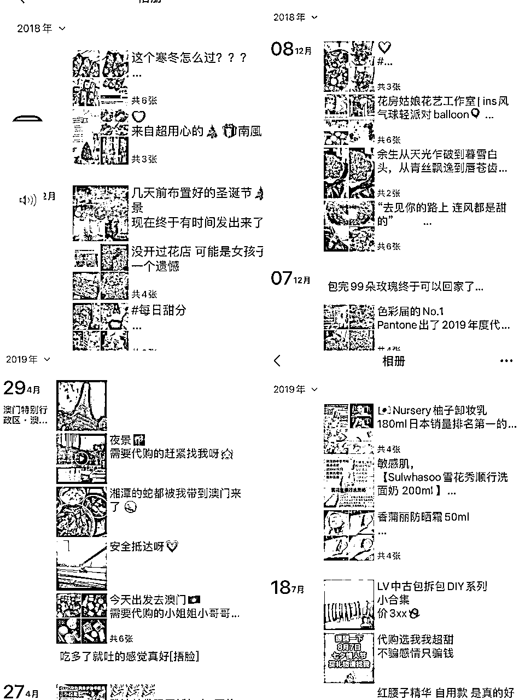
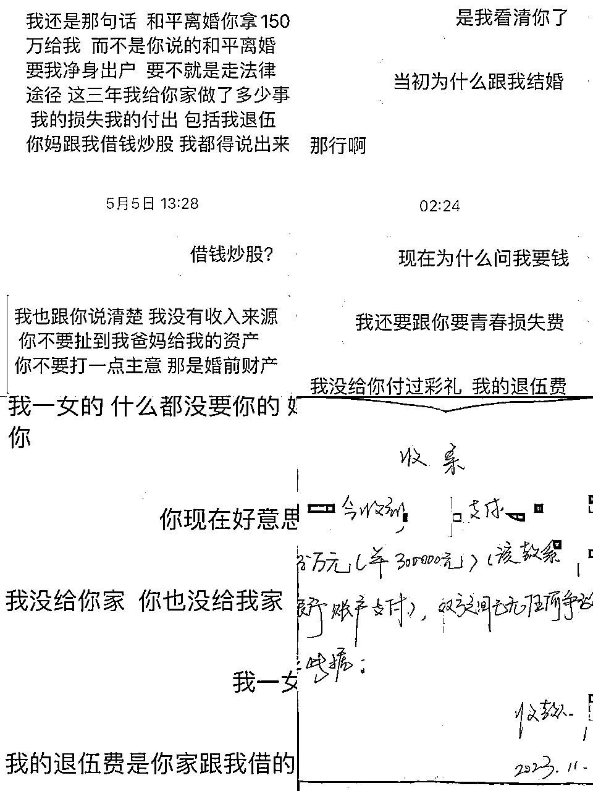
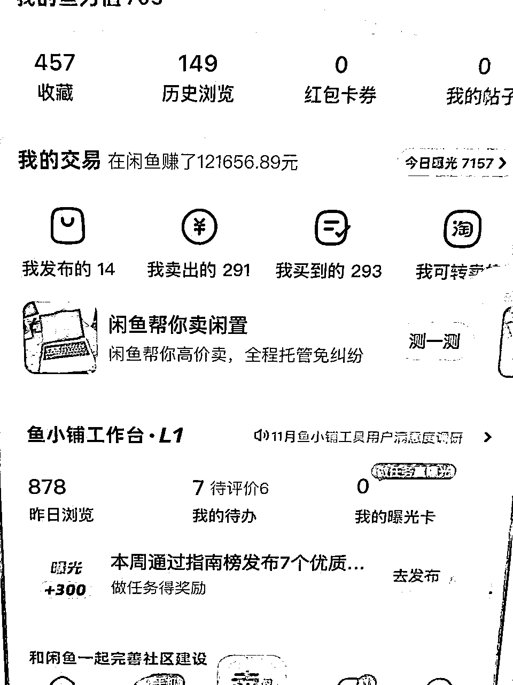
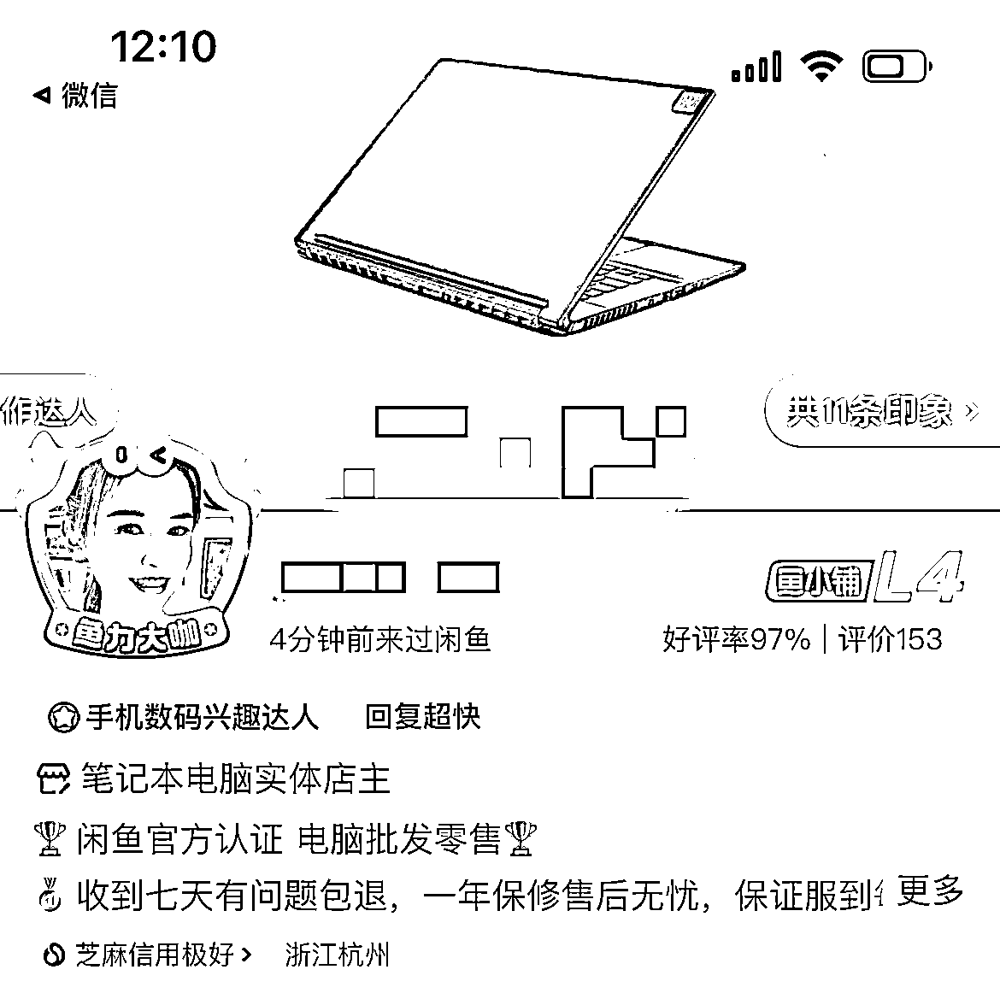
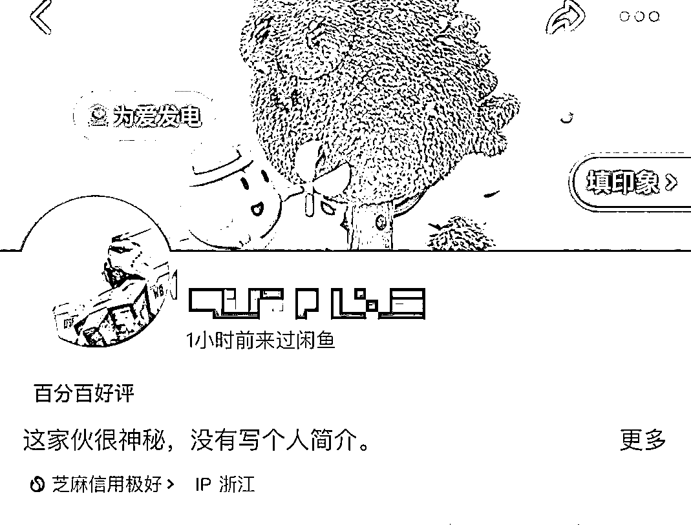
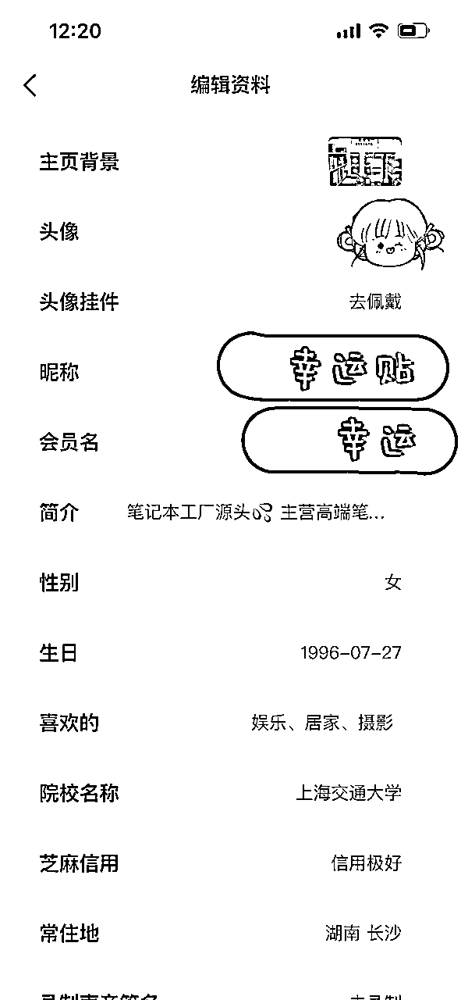
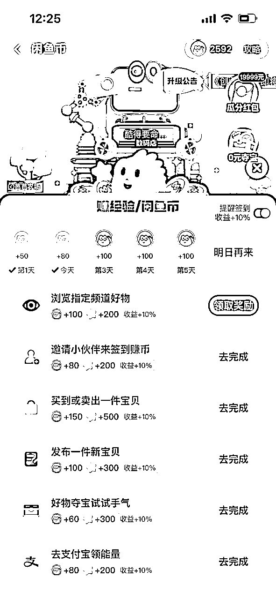
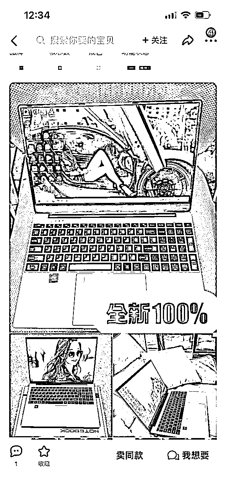

来源：https://v16d3a3u59n.feishu.cn/docx/BrhOdDvBKoalyvxvuJWcztnJnY0
大家好，我是宝妈酷得，我来自一个三线城市的小镇，爸爸是公务员，妈妈是90年代下岗后，一直做生意至今，在当地也有一定的财富积累，所以我在经济上从小富足被爸妈保护的很好也因为这样觉得全世界都是好人我想做的事情一定会成功。物质富足就会想要精神世界。虽然追寻爱情没有错但要看这个人值不值得！在物质上一直也想证明自己的能力也因为这样最起码我买单了200万打底。
物质上：这10年来抓住了微商第一波风口还有淘宝也赚了人生属于自己的50万，也因为太相信人合伙了演唱会生意被骗了10多万，也非常崩溃认识到生意人性的险恶！考过研，也没有结果 。又花了剩下的钱开了花店做了线上代购收入只能过生活对于女孩子来说疫情又以失败告终。一直在尝试项目一直在以失败结果不尽人意身上告终。在探索这么多年来还花了不少钱。赚的没有探测项目花的多！真的非常心累。

爱情上：从小就被家里保护的很好，父母对我越好父母反对的事情我越要对着干。被爱情冲昏了头脑🧠，父母都能看得出他从一始终都抱着目的接近我，我还是执意要嫁2020年我突然意外怀孕了，父母也没办法了。2021年我选了和一个复杂原生家庭不好的男生结了婚。我以为我没有事业的成功爱情上我获得结果当然我也是幸福的！没想到婚后所有经济来源都压我一个人身上，孩子，老公所有费用都我一个刚刚出完月子的女人抗 ！吵过无数次架，也被pua了三年 男生一开始就带着目的想要架空我，不断的索取，不断的算计，我选择果断结束婚姻，前夫在离婚期间骗我要换证各种手段，将我父母出资100w开的培训机构转至自己名下，最后还跟我要了30万才愿意跟我离婚放过我，30万花了，我成为了一个单亲妈妈。这几年下来父母也老了，家产被不幸的婚姻也消耗了不少，父母也帮不到我什么了 ，算起来这段婚姻上上下下在前夫身上花了200万出去。

今年我什么都没有了，觉得自己蛮失败爱情事业什么都没有，也非常愧对父母，但还是要面对现实面对孩子的奶粉钱生活费生活的落差没有让我自暴自弃。
在重新规划的过程中，我发现自己在电商领域还是有很多可以挖掘的潜力，电商投资小，风险低。于是我开始重新回到互联网赛道，利用自己的电商经验做了闲鱼无货源，也付费了不少人。在做闲鱼账号的过程中，我着重打造自己的货盘，前期担心风险所以选择的都是一些可以代发或者成本低的商品，经营一段时间以后我发现这些利润很低，花费的时间成本和精力不成对比。在电商路上又付费了很多人踩了很多坑 ，我一度怀疑老天在给我开什么玩笑开局这么好现在让我这么惨。
在机缘巧合内我在生财的帖子内刷到了我恩师瑜大的生财文章分享，莫名的缘分能量相吸我果断马上链接，跟她一起跑高利润货盘。按照他的指导和我基础的电商经验给了我方向平台我得到了马上发展第一个收益利润11月整一个月算下来还有3万多块钱盈利！让我震惊选择真的大于努力。今天我也会分享闲鱼的干货做好需要做好哪些步骤，一起往下看

下面进入正题：新手只要做好这6件小事，想不出单都难。
我个人比较喜欢的一段话也分享给大家。真正的自信从何而来？不是通过自我暗示，也不是来自他人裹扬。而是通过切切实实地完成了一些事情，得到了正面的反馈。比如，完成一个挑战性的计划。或者，获得了某项工作阶段性的成功。自信建立在你对自己的认可上，而这种认可，需要外部反馈的实感和强化。在这个生财上，有太多大佬们成绩都非常牛，越看我越焦虑但我不甘普通静下来心来深耕结果就不一样了！
前期建议大家申请一个闲鱼新号操作，因为新号操作系统是会给流量扶持的，而且账号没有乱七八糟的权重，从零开始是最快出结果的！
老账号不是指你在闲鱼用账号买过东西，而是指账号是否有过卖家行为。
同时账号超过三个月没有卖家行为，系统默认重置权重，还会给予流量扶持！
因为老账号自己随意上了一些产品，把账号扶持期的流量给浪费了；所以前期建议大家从新账号开始做或者老账号超过三个月没有卖家行为！
这个问题的确有，一个人名下多个账号有卖家行为，会导致流量分散。
但是对于新手来说，没必要太在意这个问题。还是那句话，闲鱼的主属性还是二手平台，它相比较其他的电商平台，各种机制并不完善，有影响，但是影响有限。
刚开始没必要太在意这个问题，上手后，准备放大再去使用家人的信息去注册账号就可以了！
也就是说一个手机一张手机卡一个闲鱼号。
不同的闲鱼账号不要在同一个网络（包括流量和无线网络）下面登录不同的闲鱼号
不要在同一个设备上面切换登录，否则也会影响曝光。
划重点：新手小白开始建议无脑用新号。
举个例子：


假如你是一位买家，这两个账号上架同款产品，价格相差不大，你会在哪家下单？
想都不用想，肯定是第一家，为什么？
因为他的账号包装的好，人设打造的好，给人的感觉就是真实，靠谱。
所以我们在账号包装上一定要用心，个人资料尽量填写完整：
个人资料设置在：闲鱼-我的-右上角设置-个人资料设置

因为我做数码类目，男性用户，电脑小白妹妹居多。
我的账号性别设置的是女头，因为女孩在和客户售前对话、催单、处理售后上有着天然优势！
背景我放的电脑产品图片，这样垂直，凸显我的专业深度。
也可以是豪车背景，彰显实力。
头像我用的女孩图片，这里不要用明星头像，要真实的图片！
个人简介有两个作用
让客户了解你这个人：例如多大，哪里人，做这个产品有多久；
让客户了解你这个产品：例如哪里发货，多久发货，产品渠道，售后服务，促销活动；
例如这里我就打上了笔记本工厂源头，增强信任感。
年龄设置在20到30岁之间 。
个人院校，背景图，喜好，居住地这些都要填上。

每天坚持签到做任务，赚经验领闲鱼币；
每天签到不仅能养号，提升账号权重；用得到的闲鱼币还能助推商品曝光，增加流量；
你像我每天起来第一件事就是打开闲鱼签到，做任务，这个不需要花费很多时间，每天都要做。
同行的爆品标题，价格，文案，图片是最好的。
（1）标题的构成：产品名称+长尾关键词+卖点+用户痛点+使用场景+品牌+售出原因+产品优势+数字化
这个不是让你起标题所有条件都用上，而是随意搭配几个条件就能做出一个非常好的标题。
我的方法就是找到 3-5 个我想要较多的同行，看他们是如何编辑标题的，将他们的标题复制下来；我们再经过后期的修改和优化编辑出适合我们自己的标题。
在这里我想说的是，大家平时看到好的标题和文案就用备忘录收集起来，建立自己的一个文案库和标题库再去套用。
另外还可以开一个小号，多去和同行聊天，优化自己的话术。
精选首图，第一张图是很关键的，这里会决定用户浏览量。
我的第一张图我会全方位展现产品，背景干净整洁，产品居中。
还有就是在首图上可以自己使用美图秀秀或黄油相机在图片上添加文字（全新包邮）（最后几个）等关键词；
因为把标题中有吸引的词放在图片上，更具有吸引力。

前期有产品，怎么养号都学会了吧，合天时地利都有了。接下来就是人和，也就是怎么运营了。
应该怎么做？
提高产品曝光和转化率无非是解决曝光量，浏览量，成交量和产品需求和产品市场的问题！
因为我之前有过做淘宝店的经验，做电商永远是围绕补单展开的，那闲鱼同样如此。
所以啊，刚开始我们可以做一些人为干预，把店铺的数据，产品数据做起来。
这里的话就需要继续用我之前说的小号操作啦。
这里说到流量有了，怎么去留住客户呢，我们要做的就是及时回复消息。
做闲鱼的一般兼职形式做副业的居多，这也导致了卖家不能及时地回复客户消息。
我这一个月的心得是，回复客户消息越快，越容易成交。
首先一定要对自己卖的产品非常的了解，这个前期大家要做好功课，要有一套自己的话术。像我卖做数码类的产品的话，我前期就会梳理一套回复话术，内容包括产品的配置介绍，产品用途，内存大小，价格介绍，售后服务等等。
想要高效做好回复，就一定要善用快捷键。
一般客户咨询的问题，往往都是那么几个，在哪发货、发到哪里要多久、什么快递、产品是全新的吗、能便宜点吗、产品是什么材质的等等
根据对应的问题，做好对应的话术放到手机输入法的快捷键，不仅回复快，还比较省事。
和客户聊天的时候多说一些我们、咱们，如果是男生可以用学长的口吻，女生用学姐，亲爱的，宝这样的昵称，少说一些你、我、他，让客户感觉到我们是站在他的角度考虑，富有亲和力，所以表情也是可以多发一发的。
在话术准备上，我们可以多去用小号找同行聊天，看看他们是怎么回复客户问题的，怎么引导客户下单的！
这里分享一个小技巧，能发语音给客户就绝不打字。发语音可以拉近与客户之间距离，这样可以提高成交率。（至少提升20%成交率）语气要温柔，不要太凶。
关于选品我也想给大家一些建议，我为什么在最后选择笔记本这个货盘，我做过了闲鱼很多个类目了。它的平台一个号上限是有限制的，我放弃无货源的原因就是在这里。
举例：我们来算一笔账。我之前也尝试过卖打印机这个品类，目前这个品太倦了，一天非常非常努力大概出了10单利润20*10=200块钱，一个月好的时侯最多6000块钱。现在在电子厂打螺丝稍微努力一点也有5000～6000的收入。
后面我改了赛道，一单利润大约500块钱，一天出3单，一个月利润达到4，5w。（这里指的是一个账号起号成功，得到正反馈，就马上开始多开账号，一个人可以开三个账号。）因为大家一开始会把闲鱼当作副业做，中间会受到很多因素影响，即便做不到天天出单，一个月最少最少保底也有1w块钱的收入。在这里我想说，7分选品，3分技巧，品选的好很大程度上决定了你收入的多与少。把时间和精力花在刀刃上，跟对的人，做对的事情，利益最大化。
虽然我也初来乍到，我们一起加油，共同进步 一起赚钱。对于闲鱼电商知识小白有不懂的可以随时沟通交流。一定知无不言。再次感谢瑜大给了我思路，生财提供了这么好的平台 让我链接才有我今天。这个月目前冲5万块钱利润，过个好年 ，我们一起加油~